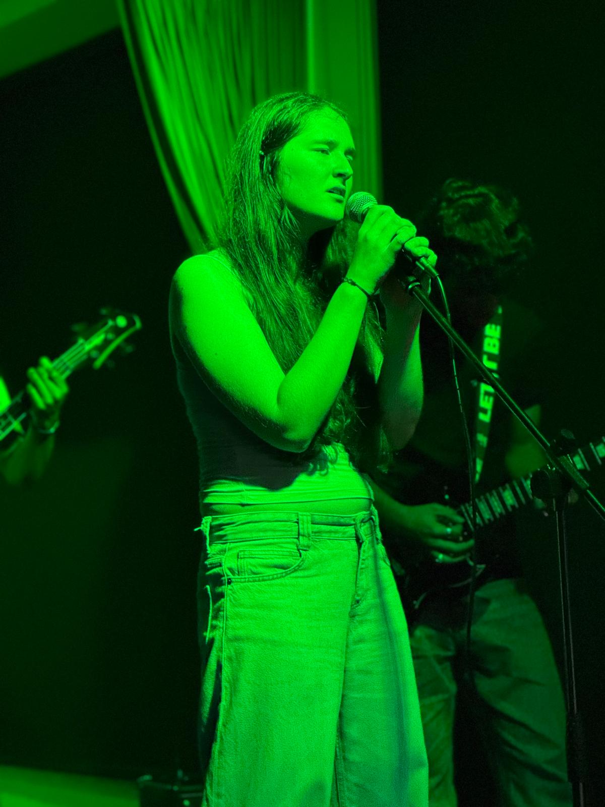
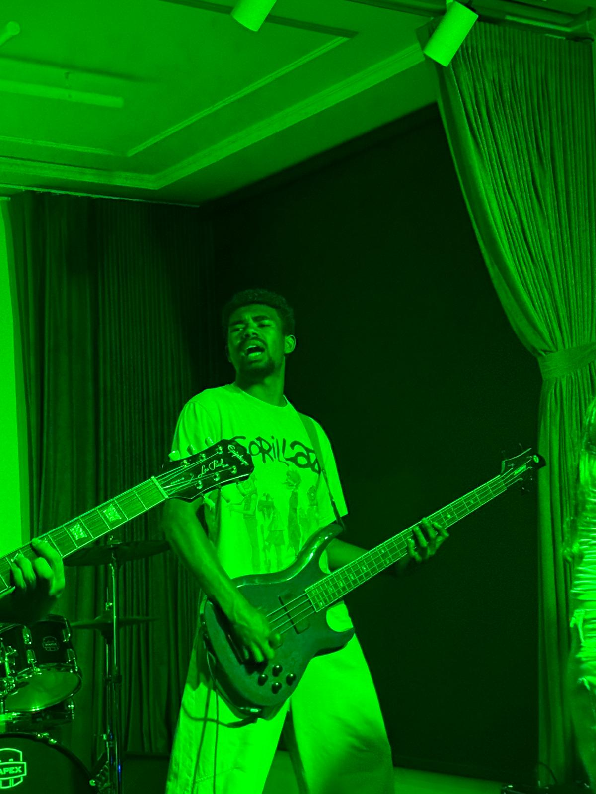
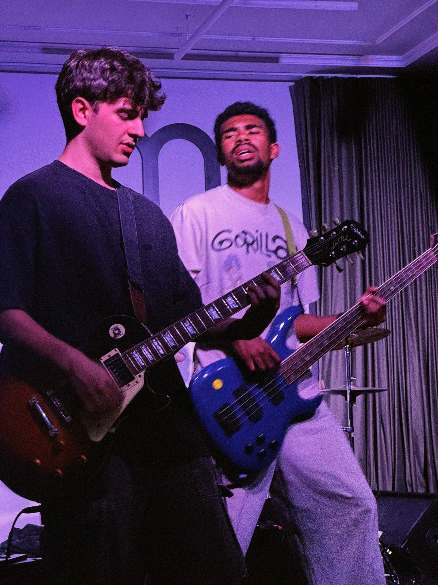
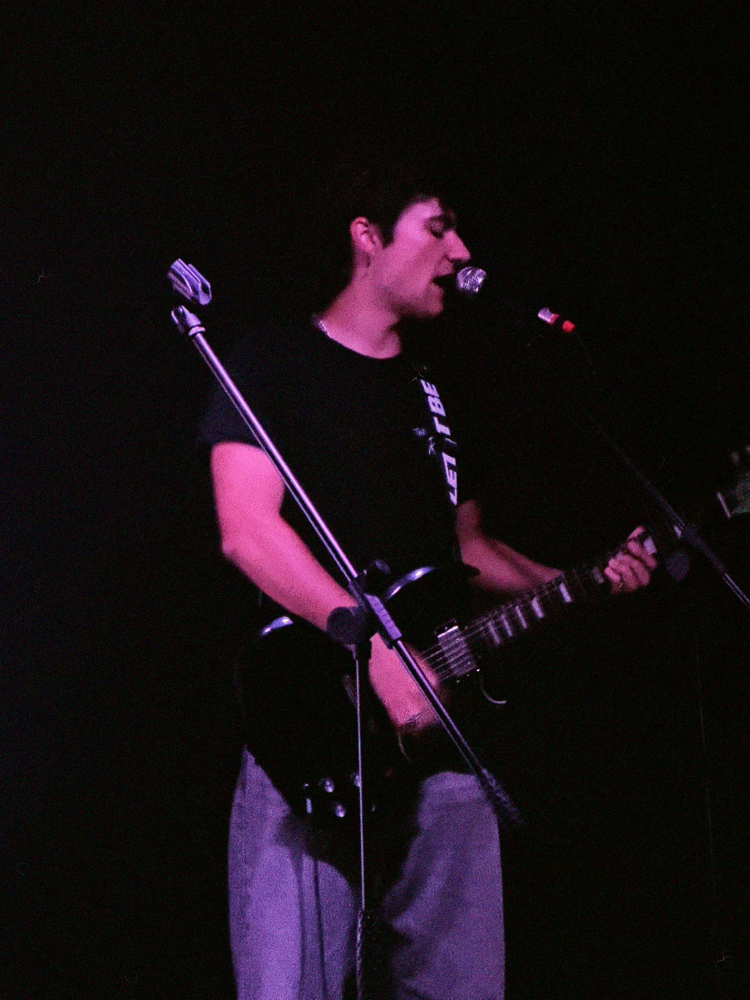
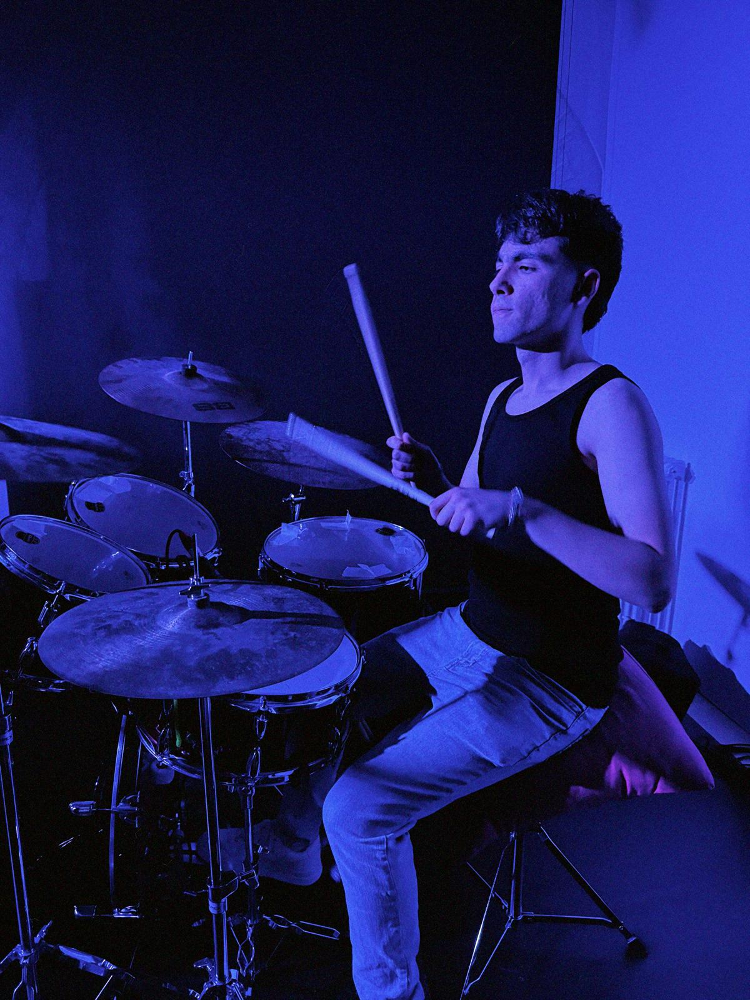
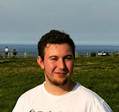
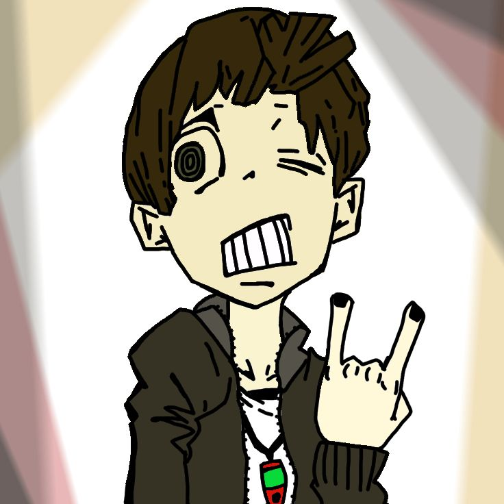

Eider
La cantante de The Rp's es Eider, una talentosa vocalista que aporta su voz única y carisma a la banda.
Vive la experiencia en directo
Renpalagoak es una banda de música que se formó en 2019 en Repélega, Portugalete. Nuestra pasión por la música nos llevó a unirnos y tocar Rock inglés, español y euskera.
Nuestro objetivo es compartir nuestra música con el mundo y conectar con nuestros fans a través de nuestras canciones. Cada miembro de la banda aporta su talento y creatividad para crear un estilo musical que nos representa.
Estamos emocionados de seguir creciendo como banda y llevar nuestra música a nuevos lugares. ¡Gracias por ser parte de nuestro viaje musical!

La cantante de The Rp's es Eider, una talentosa vocalista que aporta su voz única y carisma a la banda.

El bajista de The Rp's es Lucas, un músico talentoso que aporta su habilidad y creatividad a la banda. Su sólida base rítmica define el sonido único de Renpalagoak.

El primer guitarrista de The Rp's es Marcos, maestro de los riffs que llenan el escenario de energía. Su estilo define los solos memorables de la banda.

El segundo guitarrista, Dani, complementa perfectamente con armonías ricas y texturas que enriquecen cada canción de Renpalagoak.

El batería Moya impulsa la banda con un ritmo imparable y potencia explosiva. Su energía en vivo es contagiosa.
El técnico de sonido Sendoa asegura calidad perfecta en cada concierto. Su expertise técnica eleva la experiencia para todos los fans.
La encargada de las redes sociales, Idaira, conecta a Renpalagoak con sus fans a través de contenido creativo y actualizaciones constantes.
La fotógrafa de la banda, Ainhize, se encarga de sacar las mejores fotos de los conciertos para sacar a relucir nuestro talento.

Ugaitz, uno de los programadores detrás de esta página web, curra como una máquina y es un bólido escribiendo código.

Oier San Martín, también conocido como SanMar, es otro de los programadores detrás de esta página web, curra y escribe código, nada especial.